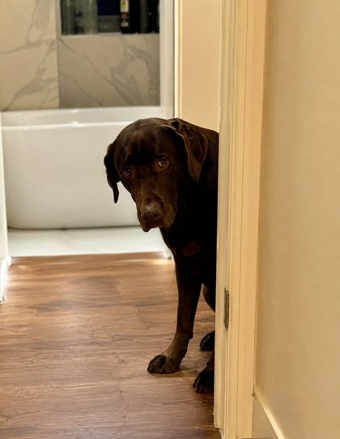
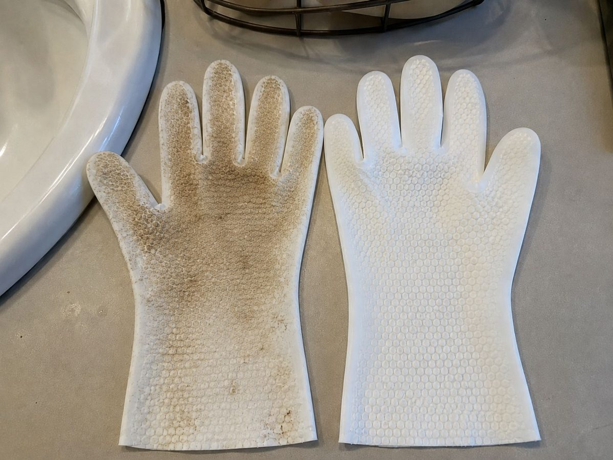

For three years, bath day in our house was a full-scale operation.
The second Murphy heard the tap running, he was gone — pressed flat under the bed, shaking like I'd threatened him. Getting him into the tub took two of us. By the end, the bathroom floor was a lake, I was soaked through, and Murphy spent the rest of the evening sulking behind the sofa like I'd betrayed him personally.
And the worst part? Within about four days, he smelled like a dog again.
I love him more than anything. But I genuinely dreaded keeping him clean — and I know I'm not the only one, because every dog owner I moaned to had the exact same story.

The video that changed my mind
Then something came up on my feed one evening: a woman "bathing" her chocolate Lab in about sixty seconds. No tub. No water. She just slipped on what looked like a soft white glove and stroked the dog down while he sat there, completely relaxed — enjoying it, actually.
I assumed it was staged. I clicked anyway.
Turns out it's a glove wipe — a five-finger glove pre-loaded with a rinse-free cleanser. You wear it, you pet your dog, and it lifts away dirt, odour and loose hair as you go. No rinsing. No drying. No mess on your hands.
The brand I ended up trying was NUZZL, and the thing that actually sold me wasn't the convenience. It was a detail I hadn't thought about.
The bit I hadn't considered
Your dog's fur is on the floor all day. The pavement, the park, the kitchen tiles, the bit of the garden you'd rather not think about. Then they climb on the sofa. Then they put their head on your lap.
NUZZL's formula is lab-tested to kill 99.9% of common bacteria — so it isn't just moving dirt around or perfuming over a smell. It's actually cleaning the coat, and dealing with the odour at the source rather than masking it.
That reframed the whole thing for me. This wasn't a lazy shortcut instead of a bath. For everything between proper baths and groomer visits, it was arguably doing a job the bath wasn't doing at all.
What sold me
- One extra-large glove cleans a full-body dog — both sides usable
- Lab-tested to kill 99.9% of common bacteria
- Rinse-free — no tub, no hose, no towels, no flooded floor
- Lifts dirt, odour and loose hair in one pass
- Takes about a minute, start to finish
The first time I tried it
I braced for the usual chaos. It never came.
Murphy sat on the kitchen floor while I wiped him down like I was just giving him a fuss — because from his side, that's exactly what it was. Ears, face, chest, paws, along his back. He leaned into it. At one point he closed his eyes.
Five minutes. No water. No mess. No sulking.
And he smelled amazing. Not perfumey — just clean. The good kind of clean dog.

Then I looked at the glove. That's the part nobody warns you about. Murphy had looked clean. The glove said otherwise — grey-brown, covered in the dirt and loose hair that had been sitting in his coat while he lay on my sofa.
Slightly grim. Deeply satisfying.
Two months on
There's a pack by the front door now for muddy paws, and one in the car boot for after walks. I haven't given Murphy a "real" bath in about two months.
His coat is softer than it's been in years — I suspect because I've stopped over-washing him. He's fresh all the time instead of on a four-day cycle. And bath-time dread, the thing that used to sit in the back of my mind all week, is just… gone.
My only real regret is the three years I spent wrestling a terrified Labrador into a bathtub when I didn't have to.
If you want to try them, NUZZL are currently running buy one get one free at £29.99 with free UK tracked delivery — which is how I ended up with a pack by the door and one in the car in the first place.
What other owners are saying
My spaniel loses his mind at bath time — it used to be a two-person job and a flooded bathroom. Now I just wipe him down while he sits there happily. No fight at all.
Bought these for muddy paws after walks and they live in the car now. One glove does my whole Labrador and the amount of dirt that comes off is honestly shocking.
My older girl can't handle full baths anymore, so these keep her fresh between grooms. She relaxes right into it because it feels like being petted.
Buy 1 Get 1 Free — £29.99
Two packs of NUZZL Bath Gloves for £29.99, with free UK tracked delivery and a free Paw Mitt in every order. One pack by the door, one in the car.
Claim Buy 1 Get 1 Free →